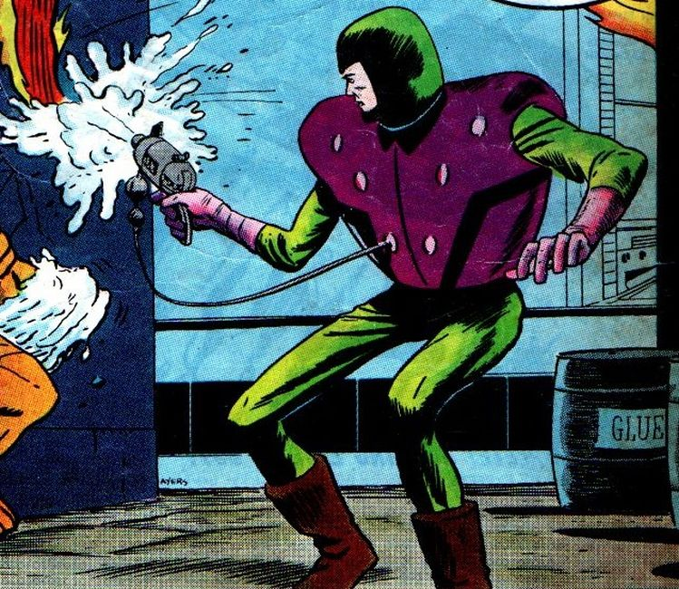
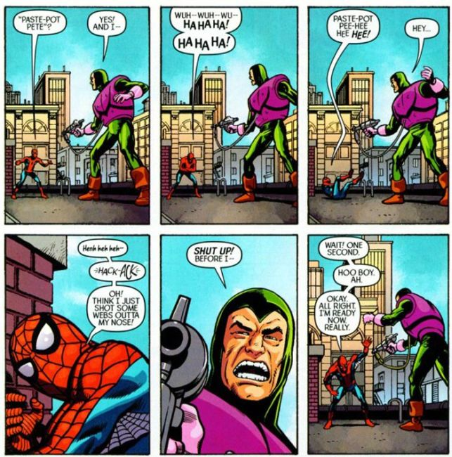
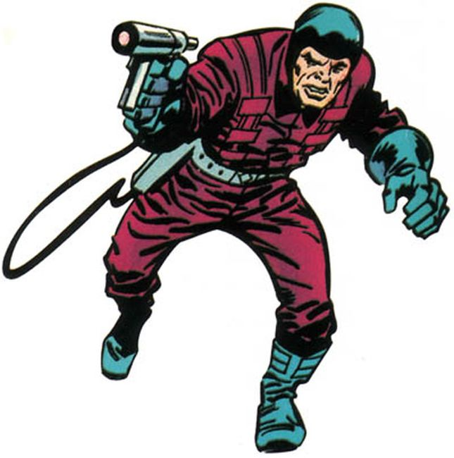

Peter Petruski was born in Gary, Indiana. Originally calling himself Paste-Pot Pete, the villain and professional criminal clashed with the Human Torch during his efforts to sell a new American missile to the Soviets. However he escaped by using his paste to catch the wing of a plane, then diving into the sea.
Following a failed solo effort against Human Torch, Paste-Pot Pete broke out of jail and teamed with the Wizard in efforts to trump his youthful foe. However Paste-Pot Pete was angered over Wizard acting as the team's leader. Wizard framed Human Torch for a robbery.
They got Human Torch to Wizard's house and used compressed air to force him into a chamber of steel mirrors, planning to fill the place with a gas that would cut off the oxygen supply of the Torch. However, Human Torch melted through the paste that held him to the floor, created a flaming duplicate to fool the two, then increased his flame enabling him to burn through the mirrors. The villains only realized this deception when the fake Human Torch faded away due to the gas, by which time Human Torch had regained his flame and captured the two in a flaming ring.
Pete later provided the Avengers with a solvent to dissolve Baron Zemo's Adhesive X, and was paroled from prison. He adopted a new costume and weaponry, and battled Human Torch and the Thing using new paste types.

He captured Thing, then Human Torch, but was still defeated. Wizard and Pete would eventually team with the criminal Sandman and the Inhuman Medusa as the Frightful Four to battle the Fantastic Four. It was shortly after the formation of the Frightful Four that Pete abandoned his old alias and assumed the more intimidating name Trapster (the "Spider-Man/Human Torch" mini-series depicts the catalyst of the name change to be Spider-Man being unable to stop laughing when Paste-Pot Pete introduced himself).

The Frightful Four would clash time and again with the Fantastic Four, often enjoying some measure of success in their efforts. Over the years, the membership of the Frightful Four would vary, but the man once known as Paste-Pot Pete would serve in virtually every incarnation in which Wizard served as well, loyal to his longtime boss.
He changed his nom de crime to Trapster and appeared with new weaponry in Fantastic Four #38, with the second appearance of the Frightful Four, in an attempt to make himself sound more formidable.
